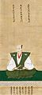

織田氏是日本的氏族和武家。斯波氏家臣。家紋是揚羽蝶、織田木瓜等。嫡流、伊勢守家的通字是「廣」、大和守家的通字是「定」、後來的近代大名的彈正忠家是「信」等。 發祥地（苗字地名）是越前國織田莊（福井縣丹生郡越前町）。本姓藤原氏（後來假冒桓武平氏）。實際上是忌部氏之流。與甲斐氏、朝倉氏相同是三管領之一的斯波武衛家的守護代，順序是次於甲斐氏的第二位。在室町時代是尾張國的守護代。在日本戰國時代，一族之間發生鬥爭，結果是彈正忠家的織田信長大大地擴展了勢力。但是就在將近天下統一之前發生本能寺之變，信長和嫡子信忠被「叛臣」明智光秀逼迫自盡，演變成織田家有力家臣的勢力鬥爭。清須會議後，表面上雖以信長嫡孫織田秀信為首，但織田秀信在長大成人後亦不能取回政權到織田家。不過秀信返回織田家的本國岐阜城並成為美濃的大名。在關原之戰中加入西軍，因此德川家康把織田家（嫡流）消滅。後來彈正忠家的庶流在江戶時代中成為外様的小大名、高家、旗本、尾張藩和明石藩家老等等並一直存續下去。還有藤掛氏、津田氏等不以織田為姓的一族存在。
-
織田氏家紋 -
 織田信長